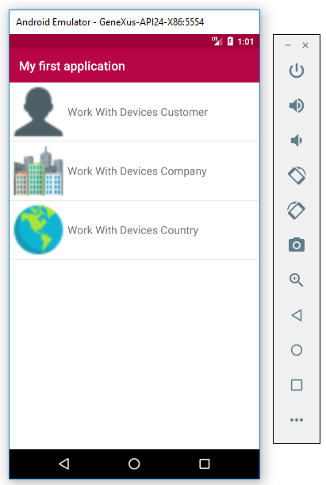

Applications generated for Smart Devices from GeneXus can be emulated. Before starting with the following steps please check that the Android Requirements are correctly installed.

In order to use the emulator (executed the application on the PC), follow these steps:
- If the emulator is running when the build process is run, then it's not started again and only the application deployment/run is executed.
- If an Android device is connected to the computer where the build process is executed, then the application is deployed to this device instead of using an emulator.
See Execution for Android Using the Device for details.
 Prototyping features and Deployment of applications for Smart Devices Prototyping features and Deployment of applications for Smart Devices
Application Deployment Tool
|